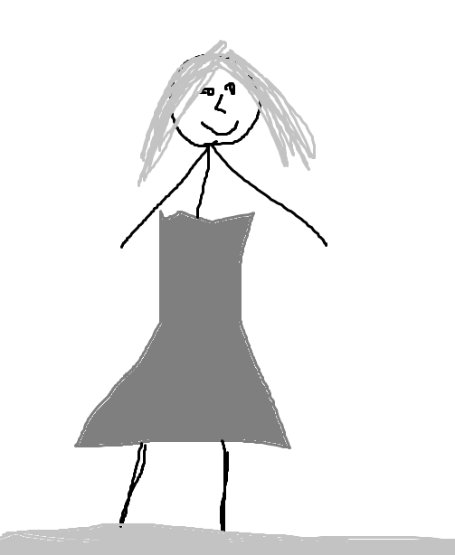

Local Photography is more than just a school. Our building was the only building left standing after The War. Our founder narrowly escaped the enemy and fulfilled her dream of capturing incredible photos. Edna Buttendorf needed money to survive the cruel world she was stuck in, so she went all-in on her lifelong dream. Her career started out small, but once the world realized how much talent she had, the green paper started rolling in. It was raining cash when tragedy struck. Edna attempted the photo of a lifetime: an action shot of the Grand Canyon. No one would expect it because the canyon is stationary. So she took a leap of faith and snapped her action shot that would change history forever. However, no one would see this photo, because she plummeted to the bottom of the Grand Canyon, breaking both herself and her camera into a million pieces. Fortunately we have many other photos that Edna took and proudly display them in our school. We will forever remember Edna and her founding of this wonderful school.

Edna Buttendorf, 1846